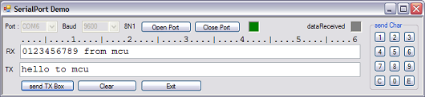

SerialPort Sample in VB.NET (C#)
Introduction
My sample demonstrates the usage of SerialPort class based on my own expereriences. I will show how You can effective use the SerialPort Datareceived event handle
Please notice my other contribution(s) with SerialPort
http://code.msdn.microsoft.com/SerialPort-Windows-Forms-a43f208e
Building the Sample
http://code.msdn.microsoft.com/SerialPort-Windows-Forms-a43f208e
The only neccessary requirement is a COM port on Your System. It may me also a USB serial device. To run this sample You need two computers connected with a null modem cable. Install this sample on both or use hyperterminal on one side.
The user interface

- choose a Com on combobox "Port"
- choose baudrate on combobox "Baud"
- press button "Open Port"
- enter a message in the TX box
- press button "send ..."
- use button array on left side to send one character
- send a messsage from remote
- press button "Close Port" when Your session is finished
Walk thrue the code
When the application starts it will retrieve all available COM ports from the System. Be aware that the array Portnames is nothing, when no port on system exists.
Portnames from System
''' <summary>
''' open Windows Form
''' </summary>
Private Sub Form1_Load(ByVal sender As System.Object, ByVal e As System.EventArgs) Handles MyBase.Load
' read avaiable COM Ports:
Dim Portnames As String() = System.IO.Ports.SerialPort.GetPortNames
If Portnames Is Nothing Then
MsgBox("There are no Com Ports detected!")
Me.Close()
End If
cboComPort.Items.AddRange(Portnames)
cboComPort.Text = Portnames(0)
cboBaudRate.Text = "9600"
End Sub
''' <summary> ''' open Windows Form ''' </summary> Private Sub Form1_Load(ByVal sender As System.Object, ByVal e As System.EventArgs) Handles MyBase.Load ' read avaiable COM Ports: Dim Portnames As String() = System.IO.Ports.SerialPort.GetPortNames If Portnames Is Nothing Then MsgBox("There are no Com Ports detected!") Me.Close() End If cboComPort.Items.AddRange(Portnames) cboComPort.Text = Portnames(0) cboBaudRate.Text = "9600" End Sub
Initialize Serialport properties
Here are standard settings to communicate in text format.
.ParityReplace replaces an incoming char with the given value (";"), when a parity error occurs. In this example it has no effect because I use parity none.
.RecevedBytesThreshold default = 1 means that when one byte is received the Datareceived event will be fired. See later notices
.NewLine is used in Serailport.ReadLine method. This given character terminates a readline and assigns the content to local variable. Notice when You use .SendLine method this character will be added automatically. Some protocols use STX,ETX flow control. You may set this property to one of this values.
.ReadTimeout When on data frame has not yet finished after 10000ms a exception will occur. You can handle now hanging communication. Please try it: Send a Char to app without carriage return. After 10000 ms a TimeOutException will occur
' device params
With SerialPort1
.ParityReplace = &H3B ' replace ";" when parity error occurs
.PortName = cboComPort.Text
.BaudRate = CInt(cboBaudRate.Text)
.Parity = IO.Ports.Parity.None
.DataBits = 8
.StopBits = IO.Ports.StopBits.One
.Handshake = IO.Ports.Handshake.None
.RtsEnable = False
.ReceivedBytesThreshold = 1 'threshold: one byte in buffer > event is fired
.NewLine = vbCr ' CR must be the last char in frame. This terminates the SerialPort.readLine
.ReadTimeout = 10000
End With
' device params With SerialPort1 .ParityReplace = &H3B ' replace ";" when parity error occurs .PortName = cboComPort.Text .BaudRate = CInt(cboBaudRate.Text) .Parity = IO.Ports.Parity.None .DataBits = 8 .StopBits = IO.Ports.StopBits.One .Handshake = IO.Ports.Handshake.None .RtsEnable = False .ReceivedBytesThreshold = 1 'threshold: one byte in buffer > event is fired .NewLine = vbCr ' CR must be the last char in frame. This terminates the SerialPort.readLine .ReadTimeout = 10000 End With
Open the COM port
I suggest in any cases embedding the method into a Try .. Catch. Indeed this is the only way to find out whether the port is already used by another application
' check whether device is avaiable:
Try
SerialPort1.Open()
comOpen = SerialPort1.IsOpen
Catch ex As Exception
comOpen = False
MsgBox("Error Open: " & ex.Message)
End Try
' check whether device is avaiable: Try SerialPort1.Open() comOpen = SerialPort1.IsOpen Catch ex As Exception comOpen = False MsgBox("Error Open: " & ex.Message) End Try
Reading COM port
Please notice: To run this sample successfully external device MUST send a carriage return at the end of every frame
A great misunderstanding of all beginners in Serialport is the usage of the Datareceived event handle. The handle method seems to be a normal member of the class. But in fact this is a secondary thread. Therefore You have to follow the rules of Threading. You retrieve a "illegal crossthreaderror" message when You try to write data direct to one UI control of Your Form. This is the correct way to achieve this:
''' <summary>
''' async read on secondary thread
''' </summary>
Private Sub SerialPort1_DataReceived(ByVal sender As System.Object, _
ByVal e As System.IO.Ports.SerialDataReceivedEventArgs) _
Handles SerialPort1.DataReceived
If comOpen Then
Try
readBuffer = SerialPort1.ReadLine()
'data to UI thread
Me.Invoke(New EventHandler(AddressOf DoUpdate))
Catch ex As Exception
MsgBox("read " & ex.Message)
End Try
End If
End Sub
''' <summary>
''' update received string in UI
''' </summary>
Public Sub DoUpdate(ByVal sender As Object, ByVal e As System.EventArgs)
tbRx.Text = readBuffer
End Sub
''' <summary> ''' async read on secondary thread ''' </summary> Private Sub SerialPort1_DataReceived(ByVal sender As System.Object, _ ByVal e As System.IO.Ports.SerialDataReceivedEventArgs) _ Handles SerialPort1.DataReceived If comOpen Then Try readBuffer = SerialPort1.ReadLine() 'data to UI thread Me.Invoke(New EventHandler(AddressOf DoUpdate)) Catch ex As Exception MsgBox("read " & ex.Message) End Try End If End Sub ''' <summary> ''' update received string in UI ''' </summary> Public Sub DoUpdate(ByVal sender As Object, ByVal e As System.EventArgs) tbRx.Text = readBuffer End Sub
Close the COM port
I suggest in any cases to clear the input buffer before You execute the .Close method
If comOpen Then
' clear input buffer
SerialPort1.DiscardInBuffer()
SerialPort1.Close()
End If
If comOpen Then ' clear input buffer SerialPort1.DiscardInBuffer() SerialPort1.Close() End If
Timing: How quick is the Datareceived event?
I have tested this on a XP System 32 bit, 1,7 Ghz, no other application running. I have placed a SerialPort.Write into the event handle. The .RecevedBytesThreshold is 1. Here is the result:

External device (mcu) sends STX (02). The dataReceived handle responses direct with a frame of bytes.
In free running mode the timespan is jittering between 4 - 6 ms. (Interval A-B on logic analyser) What is the conclusion of this fact? Try to fetch more bytes at once. You can use the inputbuffer with a default value 4096.
When You set .ReceivedBytesThreshold = 100 You will fetch up to 100 bytes at once. So You can tune the timing according to the baudrate. Another tuning trick is to make the event handle slower!
Place thread.Sleep(xx) in the event handle directly before You read the data. The effect is You application is quicker.
Summary
I think now it is very clear to everyone, that this property does not fetch the correct number of bytes in any cases. You cannot not trust this value, because the communication is still running and read the data is a little bit later.
Please download my sample and make Your own experiments. The Serialport is a very interesting class. With this class I started learning NET programming
A very useful article from Karsten: http://www.innovatic.dk/knowledg/SerialCOM/SerialCOM.htm
Appendix (from msdn)
Serial received events can be caused by any of the items in the SerialData enumeration. Because the operating system determines whether to raise this event or not, not all parity errors may be reported.
PinChanged, DataReceived, and ErrorReceived events may be called out of order, and there may be a slight delay between when the underlying stream reports the error and when the event handler is executed. Only one event handler can execute at a time.
The DataReceived event is not guaranteed to be raised for every byte received. Use the BytesToRead property to determine how much data is left to be read in the buffer.
The DataReceived event is raised on a secondary thread when data is received from the SerialPort object. Because this event is raised on a secondary thread, and not the main thread, attempting to modify some elements in the main thread, such as UI elements, could raise a threading exception. If it is necessary to modify elements in the main Form or Control, post change requests back using Invoke, which will do the work on the proper thread.
For more information about handling events, see Consuming Events.
Code C#
using Microsoft.VisualBasic; using System; using System.Collections; using System.Collections.Generic; using System.Data; using System.Diagnostics; /// <summary> /// Serial Port Demo Ellen Ramcke 2012 /// </summary> /// <remarks></remarks> public class mainForm { private string readBuffer = string.Empty; private int Bytenumber; private int ByteToRead; private char[] byteEnd = new char[3]; private bool comOpen; #region "form events" /// <summary> /// close application and COM Port /// </summary> private void Form1_FormClosed(System.Object sender, System.Windows.Forms.FormClosedEventArgs e) { if (comOpen) SerialPort1.Close(); } /// <summary> /// open Windows Form /// </summary> private void Form1_Load(System.Object sender, System.EventArgs e) { // read avaiable COM Ports: string[] Portnames = System.IO.Ports.SerialPort.GetPortNames(); if (Portnames == null) { Interaction.MsgBox("There are no Com Ports detected!"); this.Close(); } cboComPort.Items.AddRange(Portnames); cboComPort.Text = Portnames[0]; cboBaudRate.Text = "9600"; } /// <summary> /// Open Com Port here /// </summary> private void btnComOpen_Click(System.Object sender, System.EventArgs e) { // device params var _with1 = SerialPort1; _with1.ParityReplace = 0x3b; // replace ";" when parity error occurs _with1.PortName = cboComPort.Text; _with1.BaudRate = Convert.ToInt32(cboBaudRate.Text); _with1.Parity = System.IO.Ports.Parity.None; _with1.DataBits = 8; _with1.StopBits = System.IO.Ports.StopBits.One; _with1.Handshake = System.IO.Ports.Handshake.None; _with1.RtsEnable = false; _with1.ReceivedBytesThreshold = 1; //threshold: one byte in buffer > event is fired _with1.NewLine = Constants.vbCr; // CR must be the last char in frame. This terminates the SerialPort.readLine _with1.ReadTimeout = 10000; // check whether device is avaiable: try { SerialPort1.Open(); comOpen = SerialPort1.IsOpen; } catch (Exception ex) { comOpen = false; Interaction.MsgBox("Error Open: " + ex.Message); picOpen.BackColor = Color.Red; } if (comOpen) { picOpen.BackColor = Color.Green; cboComPort.Enabled = false; cboBaudRate.Enabled = false; } } /// <summary> /// close ComPort /// </summary> private void Button_Close_Click(System.Object sender, System.EventArgs e) { if (comOpen) { // clear input buffer SerialPort1.DiscardInBuffer(); SerialPort1.Close(); } comOpen = false; picOpen.BackColor = Color.Red; picDataReceived.BackColor = Color.Gray; cboComPort.Enabled = true; cboBaudRate.Enabled = true; } /// <summary> /// clear TextBoxes /// </summary> private void Button_clear_Click(System.Object sender, System.EventArgs e) { tbRx.Text = string.Empty; tbTx.Text = string.Empty; } /// <summary> /// write content of Textbox to Port /// </summary> private void button_send_Click(System.Object sender, System.EventArgs e) { if (comOpen) SerialPort1.WriteLine(tbTx.Text); } /// <summary> /// close app /// </summary> private void Button_ende_Click(System.Object sender, System.EventArgs e) { if (comOpen) { // clear input buffer SerialPort1.DiscardInBuffer(); SerialPort1.Close(); } comOpen = false; this.Close(); } /// <summary> /// send control panel key to com port /// </summary> /// <param name="sender">return key name</param> private void Tasten_Click(System.Object sender, System.EventArgs e) { string key = ((Button)sender).Text; if (comOpen) SerialPort1.Write(key); } /// <summary> /// Timer datareceived event /// </summary> private void Timer1_Tick(System.Object sender, System.EventArgs e) { picDataReceived.BackColor = Color.Gray; Timer1.Enabled = false; } #endregion #region "ComPort read data" /// <summary> /// async read on secondary thread /// </summary> private void SerialPort1_DataReceived(System.Object sender, System.IO.Ports.SerialDataReceivedEventArgs e) { if (comOpen) { try { byteEnd = SerialPort1.NewLine.ToCharArray; // get number off bytes in buffer Bytenumber = SerialPort1.BytesToRead; // read one byte from buffer //ByteToRead = SerialPort1.ReadByte() // read one char from buffer //CharToRead = SerialPort1.ReadChar() // read until string "90" //readBuffer1 = SerialPort1.ReadTo("90") // read entire string until .Newline readBuffer = SerialPort1.ReadLine(); //data to UI thread this.Invoke(new EventHandler(DoUpdate)); } catch (Exception ex) { Interaction.MsgBox("read " + ex.Message); } } } /// <summary> /// update received string in UI /// </summary> /// <remarks></remarks> public void DoUpdate(object sender, System.EventArgs e) { tbRx.Text = readBuffer; picDataReceived.BackColor = Color.Green; Timer1.Enabled = true; } public mainForm() { Load += Form1_Load; FormClosed += Form1_FormClosed; } #endregion }
using Microsoft.VisualBasic; using System; using System.Collections; using System.Collections.Generic; using System.Data; using System.Diagnostics; /// <summary> /// Serial Port Demo Ellen Ramcke 2012 /// </summary> /// <remarks></remarks> public class mainForm { private string readBuffer = string.Empty; private int Bytenumber; private int ByteToRead; private char[] byteEnd = new char[3]; private bool comOpen; #region "form events" /// <summary> /// close application and COM Port /// </summary> private void Form1_FormClosed(System.Object sender, System.Windows.Forms.FormClosedEventArgs e) { if (comOpen) SerialPort1.Close(); } /// <summary> /// open Windows Form /// </summary> private void Form1_Load(System.Object sender, System.EventArgs e) { // read avaiable COM Ports: string[] Portnames = System.IO.Ports.SerialPort.GetPortNames(); if (Portnames == null) { Interaction.MsgBox("There are no Com Ports detected!"); this.Close(); } cboComPort.Items.AddRange(Portnames); cboComPort.Text = Portnames[0]; cboBaudRate.Text = "9600"; } /// <summary> /// Open Com Port here /// </summary> private void btnComOpen_Click(System.Object sender, System.EventArgs e) { // device params var _with1 = SerialPort1; _with1.ParityReplace = 0x3b; // replace ";" when parity error occurs _with1.PortName = cboComPort.Text; _with1.BaudRate = Convert.ToInt32(cboBaudRate.Text); _with1.Parity = System.IO.Ports.Parity.None; _with1.DataBits = 8; _with1.StopBits = System.IO.Ports.StopBits.One; _with1.Handshake = System.IO.Ports.Handshake.None; _with1.RtsEnable = false; _with1.ReceivedBytesThreshold = 1; //threshold: one byte in buffer > event is fired _with1.NewLine = Constants.vbCr; // CR must be the last char in frame. This terminates the SerialPort.readLine _with1.ReadTimeout = 10000; // check whether device is avaiable: try { SerialPort1.Open(); comOpen = SerialPort1.IsOpen; } catch (Exception ex) { comOpen = false; Interaction.MsgBox("Error Open: " + ex.Message); picOpen.BackColor = Color.Red; } if (comOpen) { picOpen.BackColor = Color.Green; cboComPort.Enabled = false; cboBaudRate.Enabled = false; } } /// <summary> /// close ComPort /// </summary> private void Button_Close_Click(System.Object sender, System.EventArgs e) { if (comOpen) { // clear input buffer SerialPort1.DiscardInBuffer(); SerialPort1.Close(); } comOpen = false; picOpen.BackColor = Color.Red; picDataReceived.BackColor = Color.Gray; cboComPort.Enabled = true; cboBaudRate.Enabled = true; } /// <summary> /// clear TextBoxes /// </summary> private void Button_clear_Click(System.Object sender, System.EventArgs e) { tbRx.Text = string.Empty; tbTx.Text = string.Empty; } /// <summary> /// write content of Textbox to Port /// </summary> private void button_send_Click(System.Object sender, System.EventArgs e) { if (comOpen) SerialPort1.WriteLine(tbTx.Text); } /// <summary> /// close app /// </summary> private void Button_ende_Click(System.Object sender, System.EventArgs e) { if (comOpen) { // clear input buffer SerialPort1.DiscardInBuffer(); SerialPort1.Close(); } comOpen = false; this.Close(); } /// <summary> /// send control panel key to com port /// </summary> /// <param name="sender">return key name</param> private void Tasten_Click(System.Object sender, System.EventArgs e) { string key = ((Button)sender).Text; if (comOpen) SerialPort1.Write(key); } /// <summary> /// Timer datareceived event /// </summary> private void Timer1_Tick(System.Object sender, System.EventArgs e) { picDataReceived.BackColor = Color.Gray; Timer1.Enabled = false; } #endregion #region "ComPort read data" /// <summary> /// async read on secondary thread /// </summary> private void SerialPort1_DataReceived(System.Object sender, System.IO.Ports.SerialDataReceivedEventArgs e) { if (comOpen) { try { byteEnd = SerialPort1.NewLine.ToCharArray; // get number off bytes in buffer Bytenumber = SerialPort1.BytesToRead; // read one byte from buffer //ByteToRead = SerialPort1.ReadByte() // read one char from buffer //CharToRead = SerialPort1.ReadChar() // read until string "90" //readBuffer1 = SerialPort1.ReadTo("90") // read entire string until .Newline readBuffer = SerialPort1.ReadLine(); //data to UI thread this.Invoke(new EventHandler(DoUpdate)); } catch (Exception ex) { Interaction.MsgBox("read " + ex.Message); } } } /// <summary> /// update received string in UI /// </summary> /// <remarks></remarks> public void DoUpdate(object sender, System.EventArgs e) { tbRx.Text = readBuffer; picDataReceived.BackColor = Color.Green; Timer1.Enabled = true; } public mainForm() { Load += Form1_Load; FormClosed += Form1_FormClosed; } #endregion }
Backup
Bugfix no comport on system 30.7.2012
Don't use this line: If Portnames Is Nothing Then
Change to: If Portnames.Length = 0 then